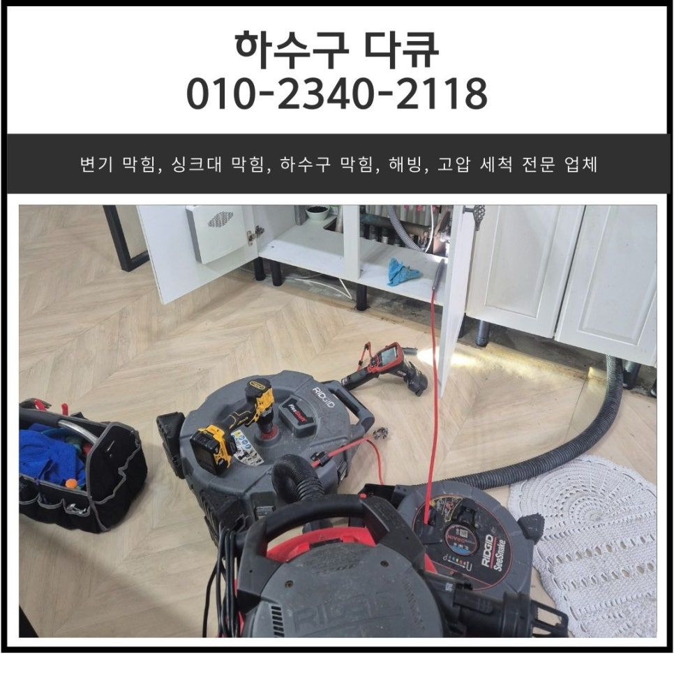
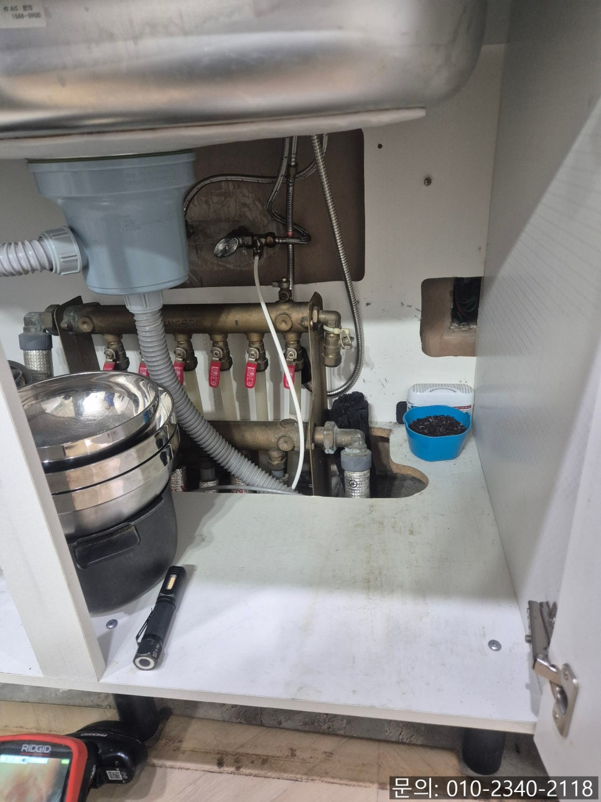
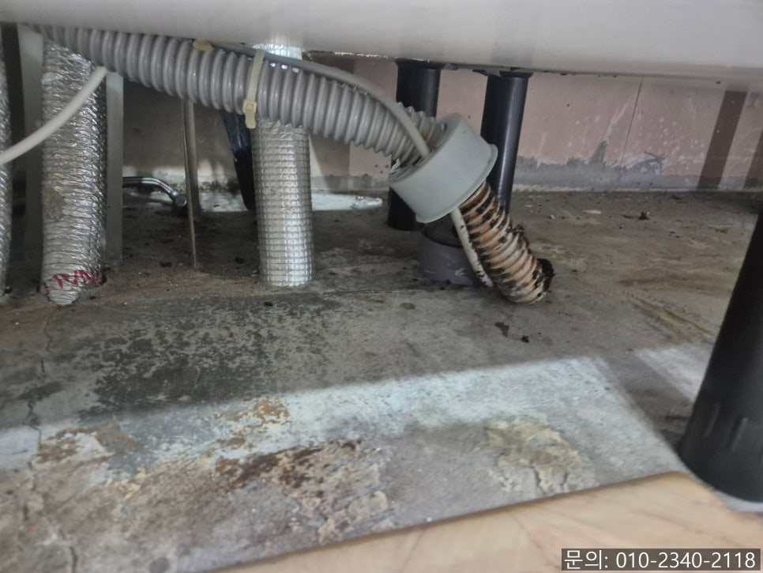
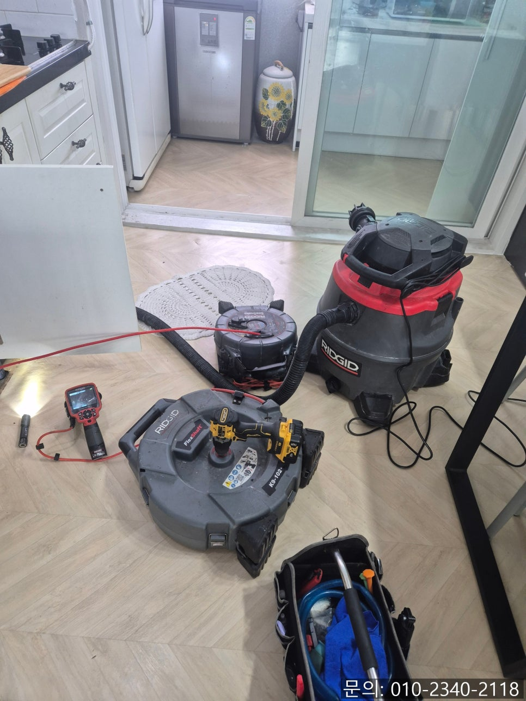
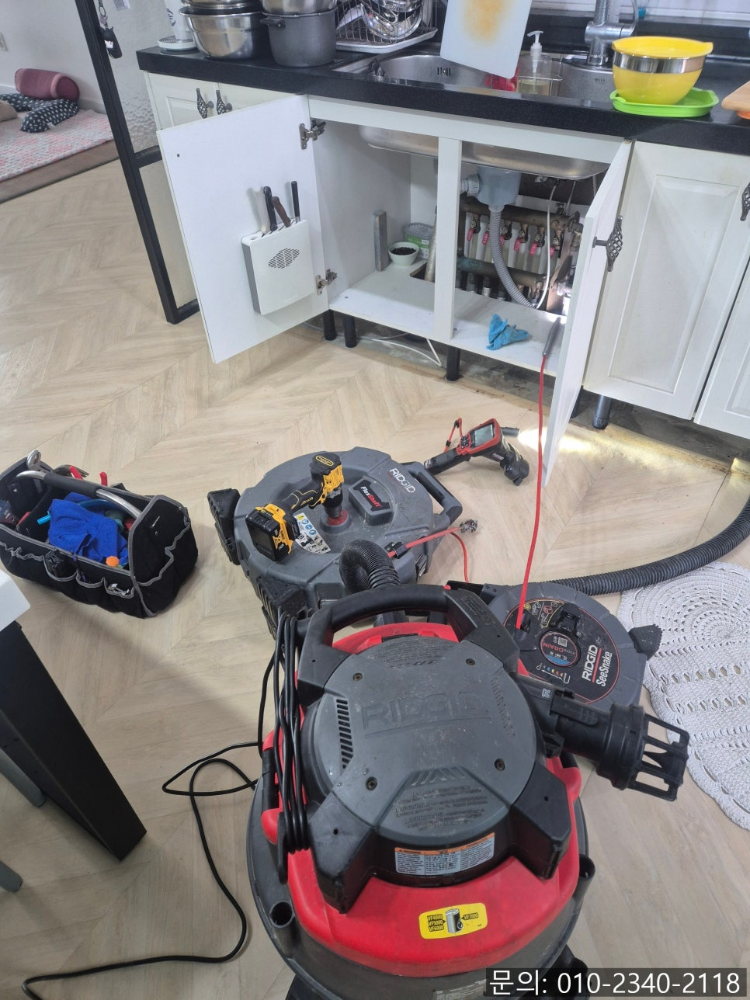
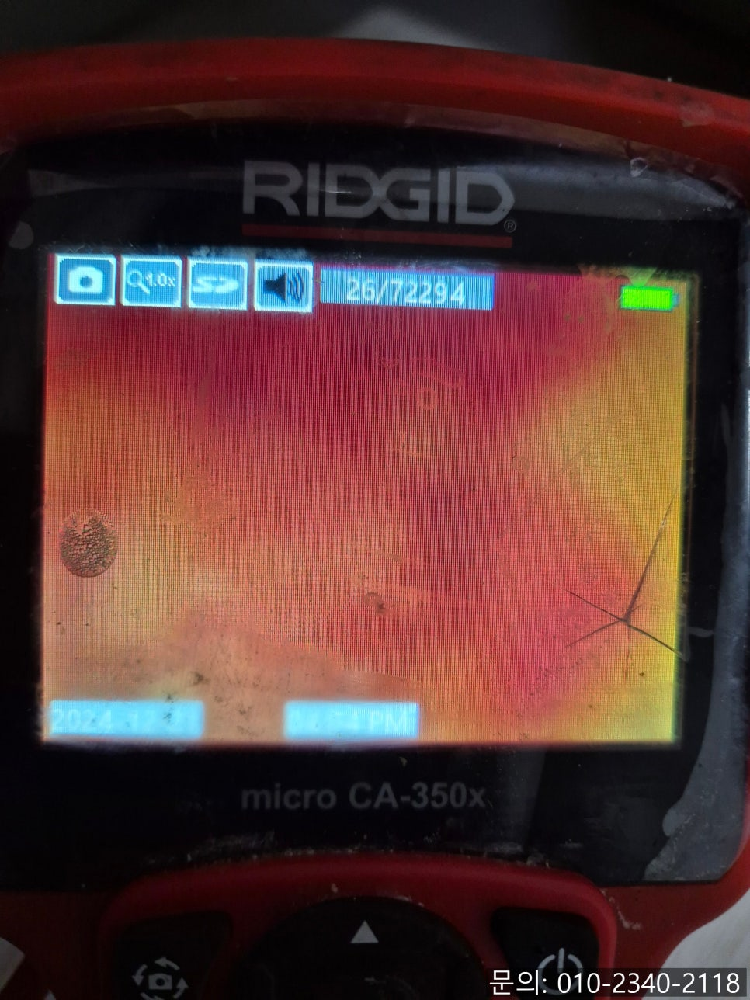

🏠 동탄 사무실 싱크대배수관막힘 영천동 하수구역류 뚫는업체
화성 영천동 싱크대막힘 전문 시공 후기

📋 작업 개요
- 위치: 화성 영천동, 영천동, 화성
- 서비스 유형: 싱크대막힘, 하수구막힘, 배관막힘, 역류해결, 뚫는업체, 배관청소, 고압세척
- 작업 일시: 2025. 7. 6. 20:47
- 업체명: 하수구수사대 (010-5615-2118)
🔍 문제 상황
안녕하세요.
영천동 아파트 싱크대 막힘, 양감면 하수구 배관 청소 업체 하수구 다큐입니다.
가족들의 식사를 위해 하루에도 몇 번씩 사용하는 싱크대를 주부님들은 가장 신경 써서 관리하고 계실 거예요.
그런데 영천동 아파트 싱크대 막힘이 발생해 물이 내려가지 않게 된다면 얼마나 불편할까요?
가족들의 식사를 위해 음식을 만들거나 사용한 식기를 세척할 수 없다 보니 금세 주방이 지저분해져 스트레스가 쌓일 것 같습니다.
요즘같이 불경기에 생활비를 줄여보기 위해 직접 영천동 아파트 싱크대 막힘을 해결해 보려고, 배수구 클리너나 락스 등을 배관으로 부어봐도 해결은 되지 않고 집안에서 락스 냄새만 진동하는 등 더 나빠지는 경우가 많습니다.
영천동 아파트 싱크대 막힘이 발생하게 되면 대부분의 고객님들은 갑작스럽게 발생한 문제라고 생각하시는 분들이 많이 계세요.

🔎 원인 분석
💡 전문가 진단: 정밀 진단 장비를 사용하여 슬러지의 고착 여부를 판명하고 타격/세척 작업을 실시했습니다.
하지만 하수구 배관의 경우 대부분 오랜 시간 사용하고 흘려보낸 물과 기름 성분, 이물질 등이 배관을 지나가면서 조금씩 쌓여 막히게 됩니다.
아마 영천동 아파트 싱크대 막힘이 발생하기 전에 물을 사용하면 꾸르륵 하는 이상한 소리가 나거나, 배수 속도가 조금씩 느려지는 등 평소와 다른 점이 있었을 텐데요. 워낙 신경 쓸게 많다 보니 눈치채지 못하셨던 것 같아요.
하수구 다큐의 블로그를 보시는 분들이라면 싱크대 막힘이 발생하기 전 어떤 신호를 보내는지 기억해두시면 좋겠죠?
싱크대에서 물을 사용하면 흘러가지 않는다고 새해 첫날인데 방문해 줄 수 있는지 하수구 다큐로 연락을 주셨습니다.
새해 첫날이었지만 불편하실 고객님을 위해 신속하게 방문해 드렸어요.
곧바로 주방으로 들어가 확인해 보니 배관이 길게 늘어져 있는 것을 확인할 수 있었습니다.
하수구와 연결되어 있는 배관을 분리하자 주름 사이사이로 썩어있는 기름 슬러지를 발견할 수 있었습니다.
기름 슬러지가 배관을 가득 메우고 있을 것으로 예상되어 내시경 카메라로 직접 확인해 보기로 했어요.

🔧 작업 과정
사람의 장기도 육안으로 확인할 수 없어 내시경 하듯 하수구 배관 역시 전용 내시경 카메라를 이용해 살펴봐야 합니다.
내시경 카메라를 진입시켜 배관 내부를 살펴보니 예상했던 대로 기름 슬러지가 가득 차 있는 상태였어요.
배관 내부로 잠시 진입했던 내시경 카메라의 노즐에도 새카만 기름 슬러지가 묻어난 것으로 보아 오랜 시간 쌓인 기름 슬러지가 썩은 것으로 파악되었습니다.
고객님께 배관에 쌓인 이물질에 대해 안내해 드리고, 뚫는 방법들에 대해 자세히 설명해 드린 다음 스케일링 작업을 진행하기로 했어요.
화성 양감면 하수구 배관 청소 업체 하수구 다큐는 기름 슬러지를 제거하기 위해 플렉스 샤프트로 청소를 진행하기로 했습니다.
플렉스 샤프트 장비는 노즐 끝에 달려있는 체인이 본체에 연결되어 있는 전동드릴의 회전하는 힘을 전달받아 배관 내부에서 강하고 빠른 속도로 회전하면서 기름 슬러지를 타격해 제거하는 역할을 해줍니다.
화성 양감면 하수구 배관 청소 업체 하수구 다큐는 빠르게 이물질을 제거하는 것도 중요하지만, 무엇보다 하수구와 배관을 오랫동안 사용할 수 있도록 이물질을 완벽하게 제거하는 것을 최우선으로 생각하고 작업한답니다.
플렉스 샤프트 장비를 사용해 이물질이 일부 제거되자 고여있던 물이 흘러가면서 배관이 형태를 드러냈지만, 잔여 이물질이 많이 남아있는 상태로 반복해서 작업을 진행해야 했습니다.
내시경 카메라로 꼼꼼하게 기름 슬러지의 위치를 파악하면서 조금씩 제거하는 작업을 거듭 진행하자 어느새 깨끗해진 내부를 확인할 수 있었습니다.
내시경 카메라를 이용해서 고객님께 배관 내부의 모습을 확인 시켜 드렸고요.
처음 현장에 방문했을 때, 주름 호스가 길게 늘어지고 꺾여 물의 흐름을 방해하고 있다 보니 고객님께 말씀드려서 싱크대에 구멍을 뚫어 수직으로 연결하는 작업까지 진행해 드렸습니다.
마지막으로 물을 한꺼번에 흘려보내면서 다른 문제는 없는지 테스트까지 진행하고 장비를 챙겨 철수할 수 있었어요.


✅ 작업 완료
싱크대 배관의 내부는 사람이 직접 확인할 수 없다 보니, 정확히 언제 막힐지 알기란 쉽지 않습니다.
갑작스럽게 싱크대 막힘이 발생하게 된다면 언제든지 연락 주세요.
깨끗하게 청소해 드리겠습니다.
경기도 화성시 향남읍 상신하길로328번길 26 5층 505호 5호




⚠️ 주방 싱크대 배관 막힘 예방 수칙
- ✅ 기름기가 묻은 식기나 프라이팬은 설거지 전 키친타올로 반드시 기름때를 닦아내세요.
- ✅ 주기적으로 싱크대 개수대에 뜨거운 물을 가득 받아 한 번에 내려 배관 내부 기름을 씻어내세요.
- ✅ 배수구 거름망을 미세한 필터로 사용하시고 음식물 찌꺼기가 틈으로 새어 들지 않게 관리하세요.
- ✅ 베이킹소다와 식초를 뜨거운 물과 함께 일주일에 한 번씩 부어주면 배관 살균과 막힘 예방에 좋습니다.
💡 핵심 정리
- 확실한 장비 작업(내시경 점검 및 샤프트 스케일링)으로 원인을 뿌리 뽑습니다.
- 작업 후 1년 이내에 동일한 부위 재발 시 100% 무상 A/S 서비스를 보장합니다.
- 서울 · 경기 · 인천 전 지역에 24시간 언제든 긴급 출동할 수 있도록 항시 대기 중입니다.
❓ 자주 묻는 질문 (FAQ)
🚨 화성 영천동 싱크대막힘 문제로 고민이신가요?
정확한 원인 진단과 확실한 시공으로 재발 없는 해결을 약속드립니다.
24시간 긴급 출동 | 서울 · 경기 · 인천 전지역 | 1년 내 재발 시 무상 A/S